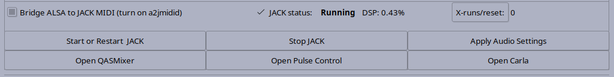

JACK is an audio routing server that provides bit perfect and sample perfect audio pathways between applications and audio devices. It was designed for professional and semi-professional audio production where quality audio and timing are essential. JACK is not required for day to day desktop audio and so Linux provides PulseAudio for desktop audio. Uses for JACK include music production, drama sound effects and audio, live podcast, radio and Video broadcast and video production (Almost all videos include audio tracks).
JACK always has a concept of a "master" device that it runs in sync with. To go with that device it uses a "backend". Studio Controls supports three of JACK's backends at this time: ALSA, Dummy and Firewire. Most devices will use the ALSA back end, including most firewire devices which show up as ALSA devices. In order to use the Firewire back end, the FireWire Module select (in the system tweaks tab) must be set to use the FFADO kernel modules and the computer rebooted. The dummy back end supplies a pseudo device based on a system clock for testing purposes.
The FFADO modules must be used for the few firewire devices not yet supported by the ALSA set of modules but can also be used as a preference as it provides sample perfect timing for included MIDI ports. The FFADO mixer will work with both the FFADO and the ALSA moduels in use for adjusting internal setting in the firewire device. Do note that some settings must be made with jack stopped, such as the clock source.
The JACK Master Settings tab allows setting this master device up.

Studio Controls allows setting two master devices, an internal device which includes PCI(e) devices as well as firewire devices that use the ALSA backend and A USB master device. In the case that a USB master device is used, the Internal device acts as a backup device that will automatically be used should the USB device be unplugged. The USB device will take over master again when plugged in. Currently, when the FFADO modules are used, the firewire back end will use the default firewire device.
The JACK Backend drop down menu allows choosing between the ALSA and the dummy back end and, if the FFADO modules are enabled, the firewire back end. For most uses, the ALSA back end will be the right choice.
The JACK sample rate drop down allows choosing the sample rate Jack should run at. Note that jACK will not complain if you tell it to use a rate the device doesn't understand, JACK will pick the closest rate and use it. Your Application may think it is using one rate and reality may be different leading to unintended sound. There are a number of Laptops for example, that only run at 48000 and a few odd ball USB devices that run at 44100 only. Before deciding to use higher rates than 48000, I would suggest viewing the video at xiph.org Digital Show & Tell. In any case either 48000 or 44100 should work for you just fine. Anything higher will use more disk space and allow fewer audio tracks because more CPU power is used. However, the choice is with the user or in some cases the client.
Note: Studio controls tries to find the range of sample rates a device supports. However, more rates may be displayed than are supported for some devices.
The JACK Buffer Size drop down lists buffer sizes JACK can use. Buffer size is a trade off. A smaller buffer size will reduce the latency or time delay of the audio signal to the output signal but will use more CPU power to process the audio because there are more context changes to do the same work. At some point either the audio hardware or the CPU will fail to keep up and pops and clicks will be heard. In some cases JACK will out right refuse to start. In general, modern mother board audio devices (HDA or PCH) will work down to 128 samples per period. HDMI on the other hand seems to need 4096 and so is not suitable for low latency work. Some of the older PCI and newer PCIe device will work at 16 sample per period. Firewire and USB have a builtin hard limit of 32 and need to use 3 periods instead of 2 (see below) to do that. Different settings may be appropriate for different uses. A buffer size of 1024 will generally work well for a mixing audio that has been recorded previously. However, for more real time uses such as broadcast routing, softsynth use or guitar effects on stage, a buffer size of 128 or lower is preferred (256 may be usable for some softsynth uses). A motherboard based audio device is likely not suitable for low latency use. Even a cheap USB audio device will give better quality and stability.
The JACK Periods drop down lists the number of buffers JACK uses. For many devices two periods works well, one buffer for the device to write to and one for JACK to read from or the other way around for outputs. However, for lower latency (buffer size 32) USB or Firewire devices will need three buffers because the transfer is time based rather sample clock based. Fifteen was envisioned to work with Opus which needs a 5ms total buffer size.
Channel Count for Dummy back end - JACK will always use as many channels as a device has but in the case of the Dummy back end, the number of channels can be set.
The Main Output Ports drop down allows choosing a default output port set other than system:playback_1 and 2. This is useful for devices where the best monitoring ports are different such as ice1712 based devices where the digital outputs channels 9 and 10 or some of the digital mixers (x32 for example) where the master outputs are the last two channels. If autojack detects a connect to system:playback_1 or 2 it will be moved to the Main Output Port and the next port. Many jack clients auto connect to the first two system ports. This reconnects them to the requested ports. Note that for more complex setups it is better to use a session manager (NSM) to manage connections so that the first two ports can be used for other uses.
The bottom part of the Audio Setup tabs remains the same for all sub tabs.
Bridge ALSA To JACK MIDI runs a2jmidid to allow ALSA MIDI ports to show up as JACK MIDI ports. This should normally be left checked.
JACK Status includes JACK DSP usage, xruns since Studio Controls was started or since last reset. DSP usage is different from CPU usage. JACK has buffer size samples in time to deal with all audio processing for those samples. DSP usage is how much of that time was actually used. With a low latency kernel the JACK can take priority over most other CPU operations and so even is CPU usage is higher, JACK can force it's way in to take what it needs for audio processing and make other processes wait. DSP usage should normally stay below 60% with only the odd peak to 80%. Above this xruns become more likely as Jack may not finish in time.
The Autojack control line has three buttons:
If JACK is started when the system is rebooted, JACK will be started automatically on next login.
The last line has a set of convenience buttons.
 Previous: System Tweaks
--- Introduction ---
Next: Audio Setup - Extra Devices
Previous: System Tweaks
--- Introduction ---
Next: Audio Setup - Extra Devices